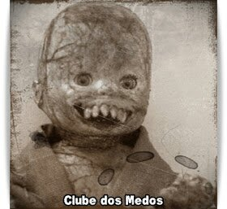

Creepypastas
-
Embora historicamente tenha sido utilizado como uma forma de manter o respeito aos deuses, o jogo da meia-noite carrega consigo um perigo significativo para aqueles que se aventuram nele. Além do risco de morte iminente, há também a possibilidade de danos mentais permanentes. É crucial compreender que JOGAR O JOGO DA MEIA-NOITE é altamente desaconselhável.
No entanto, para os corajosos que buscam adrenalina e estão dispostos a explorar os rituais mais obscuros do ocultismo, seguem instruções simples sobre como participar. Lembre-se, porém, de que estas são diretrizes a serem seguidas por sua própria conta e risco... -
PRÉ-REQUISITOS: O início do ritual deve coincidir exatamente com a meia-noite. Qualquer desvio desse horário invalidará o processo.
-
MATERIAIS: Prepare uma vela, um pedaço de papel, um instrumento de escrita, fósforos ou isqueiro, sal, uma porta de madeira e, crucialmente, uma gota de seu próprio sangue. Se mais de uma pessoa estiver participando, cada um deve ter seus próprios materiais e seguir os passos individualmente.
-
PASSO 1: Escreva seu nome completo no papel e acrescente, pelo menos, uma gota de seu sangue. Permita que o papel absorva o líquido.
PASSO 2: Apague todas as luzes do ambiente. Dirija-se à porta de madeira e coloque o papel com seu nome em frente a ela. Em seguida, acenda a vela e coloque-a sobre o papel.
PASSO 3: Bata na porta exatamente 22 vezes. Certifique-se de que seja meia-noite quando terminar. Após isso, abra a porta, apague a vela e feche-a novamente. Este ato permitirá a entrada do "Homem da Meia-Noite" em sua casa.
PASSO 4: Imediatamente após, reacenda a vela. -
Agora, o jogo começa. Com a vela acesa na mão, mova-se pela sua residência, que agora está mergulhada na escuridão. Seu objetivo é evitar o Homem da Meia-Noite a todo custo até as 03h33. Caso a vela se apague, é um sinal de que o Homem da Meia-Noite está próximo. Você tem apenas dez segundos para reacendê-la.
Se falhar em fazer isso, procure proteção dentro de um círculo de sal. Caso não consiga realizar nenhuma dessas ações, o Homem da Meia-Noite induzirá uma alucinação de seu maior medo e procederá a arrancar seus órgãos um a um, enquanto você permanece consciente, mas incapaz de reagir.
Se conseguir criar o círculo de sal, permaneça dentro dele até as 03h33.
Se conseguir reacender a vela, prossiga com o jogo. Continue até as 03h33 sem ser atacado pelo Homem da Meia-Noite ou ficar preso dentro do círculo de sal para vencer o jogo. Às 03h33, o Homem da Meia-Noite deixará sua casa e você estará seguro para continuar sua vida.
Sinais de proximidade do Homem da Meia-Noite incluem uma súbita queda de temperatura, a visão de uma figura humana puramente negra na escuridão e murmúrios suaves de uma fonte indistinta. Se perceber algum desses sinais, é aconselhável deixar imediatamente a área para evitar o confronto com o Homem da Meia-Noite. -
NÃO acenda as luzes durante o jogo.
NÃO utilize lanternas durante o jogo.
NÃO interrompa o jogo para dormir.
NÃO tente utilizar o sangue de outra pessoa em seu nome.
NÃO substitua a vela por um isqueiro, pois isso não funcionará.
E, sob nenhuma circunstância, provoque o Homem da Meia-Noite. -
Mesmo após o término do jogo, ele continuará observando você...
Boa sorte. Você vai precisar... -
Vocês se lembram daqueles desenhos antigos do Mickey Mouse dos anos 30? Aqueles que só foram lançados em DVD recentemente? Bem, existe um episódio perdido que mesmo os maiores fãs da Disney desconheciam até agora.
izem que não há nada de especial nele. É um loop contínuo, como nos desenhos dos Flinstones, de Mickey andando por seis edifícios, repetindo por dois ou três minutos antes de sumir. No entanto, em vez das músicas agradáveis que conhecemos, a trilha sonora é uma batida constante de piano por um minuto e meio, seguida por ruído branco pelo resto do vídeo.
Mas o Mickey que aparece aqui não é o alegre e dançante que todos amamos. Ele não sorri, não dança. Apenas caminha, com uma expressão séria. E, de alguma forma, sua cabeça balança de um lado para o outro, mantendo um olhar perturbadoramente sombrio.
Por alguns, todos pensavam que o vídeo acabava quando a tela ficava preta. Leonard Maltin, ao revisar o desenho para uma coleção completa, achou que era muito perturbador para estar no DVD, mas queria uma cópia digital por ser uma criação de Walt Disney. Ao digitalizar e assistir, ele percebeu algo que ninguém havia notado.
A animação durava exatamente 9 minutos e 4 segundos. Um assistente de um alto executivo da Disney e amigo do Sr. Maltin, revelou o seguinte:
"Após a tela ficar preta, permaneceu assim até o sexto minuto, antes de voltar à caminhada de Mickey. Desta vez, o som era diferente. Um murmúrio sinistro, indistinguível, como um grito abafado. Conforme o som aumentava, a imagem começava a distorcer. A calçada parecia se mover em direções impossíveis, e o rosto de Mickey lentamente se torcia em um sorriso macabro.
No minuto 7, o murmúrio se transformou em um grito horripilante, agonizante. A imagem ficava cada vez mais obscura, exibindo cores que nem poderiam existir na época. O rosto de Mickey começou a se desintegrar, com os olhos rolando para a parte inferior do queixo como bolas de gude, e seu sorriso se esticando grotescamente.
Os edifícios ao redor se transformavam em escombros flutuantes, enquanto a calçada continuava a desafiar a física. Maltin, visivelmente perturbado, saiu da sala, deixando um funcionário para terminar de assistir e tomar notas. O grito distorcido durou até os 8 minutos e alguns segundos, antes de cortar abruptamente para o rosto de Mickey nos créditos finais, com o som de uma caixa de música quebrada ao fundo.
Essa parte durou cerca de 30 segundos. O que aconteceu nos últimos 30 segundos é um mistério. Um guarda de segurança me contou que, após o último quadro, o funcionário saiu da sala com a pele pálida, repetindo 'o verdadeiro sofrimento não é conhecido' sete vezes antes de pegar a arma do guarda e se suicidar.
A única coisa que consegui relatar a Leonard Maltin foi que o último quadro mostrava um texto em russo, dizendo 'a visão do inferno traz seus espectadores para ele'. Até onde sei, ninguém mais viu o vídeo, mas vários funcionários tentaram obter o arquivo no Rapidshare, resultando em suas demissões.
Se o vídeo chegou à internet é incerto, mas se os rumores forem verdadeiros, em algum lugar online o arquivo 'suicidemouse.avi' pode ser encontrado. Se você achar uma cópia, não a assista. Entre em contato comigo imediatamente, independentemente da hora." -
Era uma vez, uma jovem bela que morava numa pequena cidade ao sul de Farmersburg. Certo dia, seus pais precisaram viajar, deixando-a sozinha, mas sob a proteção de seu fiel cão, um grande collie. Antes de partir, seus pais a instruíram a trancar todas as portas e janelas da casa.
Às 20h, seus pais partiram para a cidade. Obediente, a menina trancou todas as portas e janelas, mas havia uma janela no porão que não fechava completamente. Após muito esforço, conseguiu fechar a janela, mas não pôde trancá-la. Para garantir que ninguém entrasse, pregou a porta do porão.
Depois de jantar, decidiu ir dormir. Por volta da meia-noite, aconchegou-se com seu cão e adormeceu. No entanto, em algum momento, acordou repentinamente. Olhou para o relógio... eram 2h30. Tentou se acalmar e voltou a se aconchegar, mas ouviu um som. Era um gotejamento. Pensando que a torneira da pia estava pingando, não deu muita importância e tentou voltar a dormir.
Sentindo-se nervosa, estendeu a mão sobre a borda da cama, e deixou seu cão lamber sua mão, buscando conforto. Mais uma vez, às 3h45, acordou com o mesmo som de gotejamento. Irritada, mas cansada demais para investigar, estendeu novamente a mão e sentiu a língua quente do cão. Adormeceu outra vez.
Às 6h52, decidida que já havia aguentado o bastante, levantou-se para verificar o que estava acontecendo. Caminhou até o banheiro e lá, uma visão aterradora a esperava: seu amado collie estava esfolado e pendurado na haste da cortina. O som que ouvira era o sangue do cão pingando em uma poça no chão. Na parede, uma mensagem escrita com sangue gelou sua espinha: "Os humanos também podem lamber, minha linda." -
No dia de seu aniversário, Lúcia foi despertada por sua madrasta, que lhe trouxe um grande pacote recebido pelos correios, endereçado a ela. Com entusiasmo, Lúcia desembrulhou rapidamente o presente, mas seu ânimo se transformou em horror ao ver o conteúdo: uma boneca antiga e repugnante, a mais assustadora que já tinha visto.
A boneca era velha, completamente careca, com a pele rachada e coberta de poeira. O pior de tudo era a boca, com dentes longos e afiados, como as presas de um animal selvagem. Um calafrio percorreu o corpo de Lúcia, e ela jogou a boneca no chão, empurrando-a para um canto. Imediatamente, sua madrasta a repreendeu, dizendo que alguém deveria ter tido muito trabalho para enviar aquela boneca antiga, e que ela deveria se sentir agradecida.
Lúcia tentou protestar, mas sua madrasta se recusou a ouvir e a forçou a manter a boneca, negando-se a jogá-la fora. Para evitar mais conflitos, Lúcia enfiou a boneca em um armário embaixo da escada, escondendo-a atrás de uma pilha de sapatos, onde não precisaria olhar para ela.
Nas noites seguintes, Lúcia começou a ouvir um som estranho enquanto estava deitada na cama. Era um ruído que ela não conseguia identificar de imediato, mas que a deixava inquieta. O barulho cessava e voltava depois de alguns minutos, como se algo estivesse se movendo com pequenos passos. Lúcia tremia na cama, incapaz de se mover. Dormia sempre com a porta aberta para aproveitar a luz do corredor, pois tinha medo do escuro. De repente, uma voz sussurrou para ela do corredor:
— Lúcia, eu estou no quinto degrau.
Apavorada, Lúcia cobriu a cabeça com os cobertores e ficou tremendo de medo, mas os sons pararam subitamente. Naquela noite, Lúcia não conseguiu mais dormir e ficou debaixo das cobertas até o amanhecer, quando sua madrasta entrou no quarto para acordá-la.
Lúcia contou o ocorrido para sua madrasta, que insistiu que tudo não passava de um pesadelo. Mesmo assim, Lúcia implorou para jogar a velha boneca fora, mas a madrasta insistiu que o brinquedo era um presente e deveria ser guardado. Ela até abriu o armário para mostrar que a boneca estava no mesmo lugar de sempre. Contrariada, Lúcia começou a acreditar que tudo não passava de um sonho.
Naquela noite, Lúcia tentou ficar acordada o maior tempo possível, mas logo foi vencida pelo cansaço. Depois de um tempo, foi despertada por uma voz abafada que dizia:
— Lúcia, eu estou no décimo degrau...
Novamente, a criança cobriu a cabeça com o cobertor e chorou de medo, sem conseguir dormir. Como na noite anterior, o som cessou e ela não ouviu mais nada até o amanhecer.
Na escola, Lúcia contou aos amigos sobre a boneca, mas todos riram e fizeram piadas. Lúcia então calculou que, se a boneca subia cinco degraus por noite, na próxima noite chegaria ao topo da escada, ficando de frente para o seu quarto.
Apavorada, Lúcia decidiu dormir com a porta do quarto fechada e a luz acesa. Quando sua madrasta entrou para lhe dar boa noite, perguntou por que havia fechado a porta. Lúcia pediu para deixar a luz do quarto acesa em vez da luz do corredor, mas sua madrasta disse que a luz forte a impediria de dormir.
Assim, Lúcia concordou em dormir com as luzes apagadas e a porta fechada. Para não ficar completamente escuro, abriu as cortinas, tentando clarear um pouco o quarto. Quando começou a cochilar, ouviu novamente o barulho... e então a voz veio, mais clara e alta do que nas outras vezes:
— Lúcia, eu estou no topo da escada...
Na escuridão, ela viu a porta abrir lentamente...
Na manhã seguinte, encontraram o corpo de Lúcia no pé da escada. Pensaram que ela tivesse se levantado para ir ao banheiro durante a noite, tropeçado e caído, quebrando o pescoço. Ao lado dela, estava a velha boneca. Sua madrasta pediu que a enterrassem com o brinquedo.
— Ela amava tanto esta boneca... Agora podem ficar juntas para sempre — disse a madrasta com um sorriso enigmático.

-
Há muito tempo, na Escócia, conta-se a história de uma jovem tomada por um desespero profundo, cuja alma atormentada ansiava por escapar da dor da existência. Determinada a encontrar a paz na morte, ela traçou um plano sombrio, meticulosamente apagando todos os rastros de sua presença neste mundo antes de se entregar ao abismo.
A notícia trágica da partida prematura da jovem ecoou pelos corredores sombrios da sua casa ancestral, mergulhando seus entes queridos em uma dor indescritível. Contudo, antes que pudessem começar a lamentar sua perda, uma sombra sinistra pairou sobre a família, ceifando suas vidas uma após a outra, num desdobramento de eventos inexplicáveis e sombrios.
O sofrimento e a angústia que assolavam a jovem em vida transformaram-se em uma força maligna além da morte, dando origem à lenda da "Morte Branca". Diz-se que aqueles que ousam sondar os mistérios de sua trágica história estão condenados ao mesmo destino sombrio que assolou sua família, encontrando um fim precoce nas garras gélidas da morte.
Portanto, cautela é aconselhada a todos os que se aventuram a ler estas palavras, pois o bater insistente à sua porta pode muito bem ser o chamado sombrio da Morte Branca, cujo toque gélido sinaliza o fim iminente. Resista à tentação de abrir, pois o que aguarda do outro lado é a escuridão eterna, pronta para engolir os incautos que desafiam os limites entre a vida e a morte. -
Hanako do Banheiro, uma lenda urbana japonesa que ecoa a história da Loira do Banheiro no Brasil, conta a trágica saga de uma menina de 10 anos. Hanako, entusiasmada em uma brincadeira de esconde-esconde com seus colegas de escola, escolheu a terceira cabine do banheiro feminino como seu esconderijo. Infelizmente, após seu desaparecimento, Hanako nunca mais retornou.
A triste descoberta veio no dia seguinte, quando a zeladora encontrou Hanako sem vida, caída no chão da terceira cabine. As versões variam sobre as circunstâncias de sua morte, algumas sugerindo um acidente fatal, enquanto outras insinuam um destino mais sinistro, possivelmente um ato de violência.
Outras versões da lenda sugerem um passado marcado pelo bullying, onde Hanako, uma aluna do ensino fundamental, decidiu tirar sua própria vida para escapar do tormento. O espírito de Hanako, dizem, continua a assombrar a terceira cabine dos banheiros escolares, em busca de amizade ou talvez de justiça por sua morte. Alguns afirmam que ela busca vingança, repetindo o destino daqueles que cruzam seu caminho.
A lenda ainda persiste em narrativas sobre aparições misteriosas e encontros assustadores. Dizem que, ao bater três vezes na porta do banheiro enquanto se pergunta "Hanako-san, Hanako-san, quer brincar?", uma voz sussurrante pode responder "Sim". Aqueles que tentam fugir são advertidos de que Hanako os perseguirá até suas próprias casas, emergindo à meia-noite. O destino daqueles que desafiam essa lenda permanece incerto, mas as histórias de Hanako continuam a ecoar pelos corredores das escolas japonesas, deixando uma aura de mistério e medo no ar. -
Um jovem empresário, em uma viagem de negócios, dirigia por uma estrada deserta quando a noite caiu, envolvendo tudo em uma escuridão impenetrável. Para evitar o perigo de dirigir em uma rodovia sem iluminação, ele decidiu passar a noite em um hotel à beira da estrada.
Ao entrar no hotel, foi recebido por uma simpática recepcionista, que lhe entregou a chave do último quarto no corredor. No caminho para seu quarto, notou algo peculiar: um quarto sem marcação numérica, diretamente em frente ao seu. A curiosidade o fez espiar pela fechadura. Lá dentro, viu uma mulher extremamente pálida, de costas para a porta, olhando fixamente pela janela. Considerando a visão estranha mas inofensiva, ele foi para o seu quarto e adormeceu.
Na manhã seguinte, a curiosidade voltou a tomar conta dele. Decidiu espiar novamente pelo buraco da fechadura. Desta vez, tudo o que viu foi um estranho tom vermelho. Pensou consigo: "Provavelmente a mulher notou que eu estava olhando e colocou algo vermelho para bloquear a fechadura."
Inquieto com a curiosidade, quando já estava de saída do hotel, não resistiu e perguntou à recepcionista:
— Quem é aquela mulher no quarto à frente do meu?
A garota o olhou surpresa, com uma expressão que mesclava incredulidade e medo.
— Não reservamos mais aquele quarto. Naquele quarto, há muitos anos, ficou uma família. O pai assassinou a mulher e os filhos, antes de se matar. — ela fez uma pausa, engolindo em seco. — A característica mais marcante deles era que todos tinham a pele branca como a neve, exceto pelos olhos... que eram vermelhos.
Um arrepio percorreu a espinha do empresário. A cor vermelha que ele vira pela fechadura não era um bloqueio, mas o olho vermelho da mulher morta, observando-o do outro lado. Com um calafrio, ele deixou o hotel, sentindo-se seguido por aquele olhar assombrado.
Enquanto dirigia para longe, uma sensação de pavor persistia, como se os olhos vermelhos continuassem a observá-lo, mesmo na segurança de seu carro. O empresário sabia que jamais esqueceria aquela noite, nem o olhar mortal que o espreitava do outro lado da porta.
O Homem da Meia-Noite

Suicide Mouse

Lambidas

A Boneca
A Morte Branca